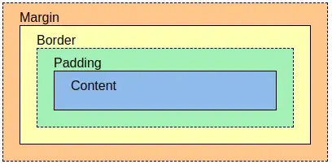

Box Model is used when talking about design and layout. In HTML every element has box around it. The CSS box model is essentially a box that wraps around every HTML element. It consists of: margins, borders, padding, and the actual content. The image below illustrates the box model:
Explanation of the different parts: